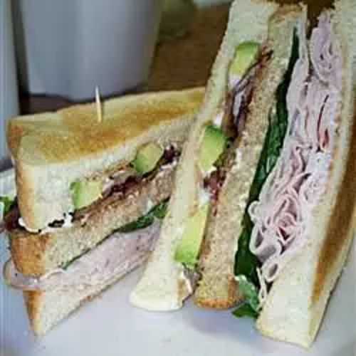

Turkey Sandwich

Description
A fantastic sandwich with sliced turkey, guacamole, toasted whole wheat bread, fresh tomato, lettuce, bean
sprouts, yellow mustard and light mayo. For cheese lovers, Colby-Jack makes a great addition as well. No one I
know can resist this one!
Ingredients
- 2 slices whole wheat bread, toasted (Optional)
- 1 tablespoon mayonnaise
- 2 teaspoons Dijon-style prepared mustard
- 3 slices smoked turkey breast
- 2 tablespoons guacamole
- ½ cup mixed salad greens
- ¼ cup bean sprouts
- ¼ avocado - peeled, pitted and sliced
- 3 ounces Colby-Monterey Jack cheese, sliced
- 2 slices tomato
Directions
- Spread mayonnaise on one slice of toast, then spread mustard on the other.
- Arrange the sliced turkey on one side. Spread guacamole over the turkey. Pile on the salad greens, bean
sprouts, avocado and cheese. Finish with tomato slices, then place the remaining slice of toast on top.